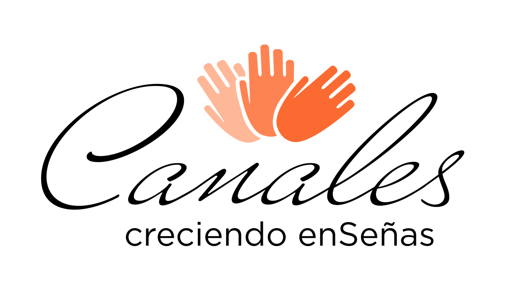

Un proyecto de inclusión social que utiliza el fútbol como herramienta educativa y comunitaria para niños y niñas sordos en Argentina.
Canadá · México · Estados Unidos — 11 de junio de 2026
¡El Mundial 2026 ya comenzó! ⚽
Fútbol enSeñas es un proyecto de inclusión social que utiliza el fútbol como herramienta educativa y comunitaria para niñas y niños sordos en Argentina. El programa propone entrenamientos accesibles en Lengua de Señas Argentina (LSA), la formación de entrenadores sordos como referentes y la creación de espacios deportivos inclusivos donde niños sordos y oyentes puedan compartir experiencias en igualdad de condiciones.
El proyecto se desarrolla inicialmente en la Ciudad de Buenos Aires y luego se expande a otras provincias, con el objetivo de generar un modelo replicable y sostenible de acceso al deporte para la infancia sorda.
Promover la inclusión social, el desarrollo personal y el bienestar de niñas y niños sordos a través del acceso real y sostenido al fútbol, en un entorno accesible, seguro y culturalmente pertinente.
Cada objetivo conforma una pieza del modelo: desde la formación de referentes hasta la expansión territorial sostenida.
Formar entrenadores sordos y/o entrenadores con dominio de LSA como referentes deportivos y comunitarios.
Garantizar entrenamientos de fútbol accesibles en Lengua de Señas Argentina (LSA).
Desarrollar materiales deportivos y pedagógicos adaptados a la comunidad sorda.
Fomentar la interacción entre niños sordos y oyentes mediante encuentros y torneos inclusivos.
Expandir el modelo a nuevas provincias, asegurando continuidad y escalabilidad.
Niñas y niños sordos de entre 6 y 15 años que accederán a entrenamientos en LSA y experiencias deportivas inclusivas.
Entrenadores sordos y entrenadores oyentes con dominio de LSA.
Familias de niños sordos, acompañadas mediante talleres específicos.
En escuelas, asociaciones y clubes comunitarios, comenzando en la Ciudad de Buenos Aires y expandiéndose a otras provincias del país.
Canales Asociación Civil coordina el proyecto de manera integral: planificación, logística, administración, comunicación y monitoreo. La ejecución técnica se realiza en articulación con organizaciones del ámbito deportivo sordo, escuelas y asociaciones comunitarias, asegurando una toma de decisiones participativa junto a niños, familias y entrenadores.
El proyecto deja capacidades instaladas: entrenadores formados, materiales reutilizables en LSA y redes institucionales activas.
Esto permite que los entrenamientos y torneos continúen más allá del financiamiento inicial, ampliando el impacto a largo plazo.
Por acompañarnos en este camino hacia un fútbol que enseña, escucha y une.